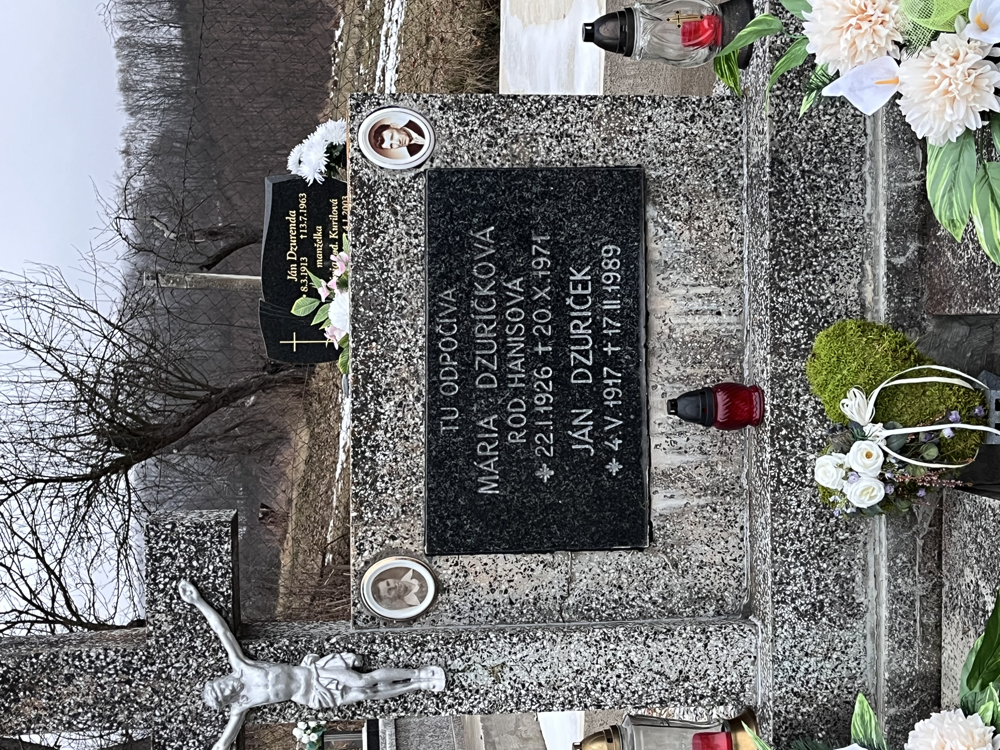
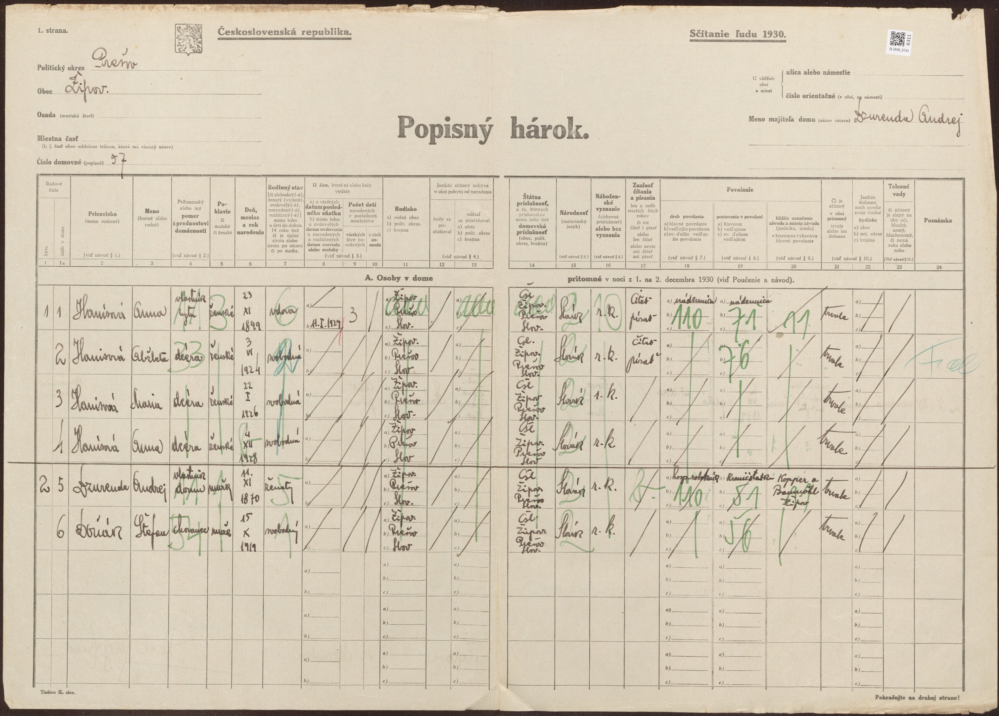

Vetva Hanis (Žipov)
Súvisí: Vetva Rusinko (Anna Hanisová ⚭ Ján Rusinko 1923) · Prehľad
⭐⭐⭐ PRIELOM 19.7.2026 — meno otca + nová generácia (Arcibiskupský archív KE, Mgr. Róbert Eliáš)
Kľúčová oprava: Žipov nepatril pod Radačov, ale pod farnosť BAJEROV (radačovská hypotéza padá). Z odpisov matrík farnosti Bajerov:
- ⭐ Otec = JOZEF HANIS, †11.1.1929, vo veku 34 rokov → narodený ~1894/95 (nie 1910 z radačovskej hypotézy — tá bola omyl!). Konečne máme jeho meno.
- ⭐ Matka = Anna rod. DZURENDOVÁ — jej rodné meno sme doteraz vôbec nepoznali! (FS ju mal len ako „Anna".) Sedí s Andrejom Dzurendom, majiteľom domu Žipov 57 z hárku 1930 — takmer isto jej otec.
- Anna Dzurendová *24.11.1900 (oprava! FS mal 23.11.1899), rodičia Andrej Dzurenda & Alžbeta rod. Šoltésová (Soltész), bývali Žipov č. 18 → Andrej Dzurenda a Alžbeta Šoltésová = 2× prastarí rodičia, NOVÁ GENERÁCIA.
- Sobáš Jozefa Hanisa a Anny Dzurendovej archív nemá (chýbajú roky 1918–1927) → sú na farskom úrade Bajerov (bajerov@abuke.sk).
- ⚠️ Zostáva neznáme: rodičia samotného Jozefa Hanisa (jeho krst ~1894/95 + odkiaľ pochádzal — sobáš 1918–27 to prezradí).
Čo vieme
- Anna Hanisová 4.12.1928* Žipov (
GYM2-LCP) — babka. Príčina úmrtia: mozgová porážka** (rodinný zošit). - Jej otec Jozef Hanis (
GYM2-8M9) *~1894/95 †11.1.1929 (34 r.) — zomrel ~5 týždňov po narodení Anny! Meno doložené archívom 19.7.2026. - Jej matka Anna rod. Dzurendová *24.11.1900 Žipov (
GYM2-WVL), rodičia Andrej Dzurenda & Alžbeta Šoltésová. - Sestry Anny (podľa FS, NagyLukas 8/2024): Alžbeta Hanisová 3.6.1924 Žipov (
GYM2-D3W), Mária Hanisová 22.1.1926 (GYMS-9YH) — spýtať sa rodiny na tety a ich potomkov! - ⭐ Mária — doložená náhrobkom (fotografia 10.7.2026): „Mária Dzuričková rod. Hanisová 22.I.1926 †20.X.1971" + manžel Ján Dzuriček 4.V.1917 †17.II.1989 (dožil sa ~72 r.) (do FS pridaný 10.7.2026 ako
PXS2-M43, sobáš = vzťah9ZHL-SLQ, zdroj = náhrobokW8FC-FF6). Cintorín takmer isto Žipov (v pozadí hrob Jána Dzurendu *1913 — Durenda je žipovské priezvisko už v súpise 1715). Foto:
→ Dzuričekovci** = potomkovia tejto vetvy sú mamine sesternice/bratranci 2. stupňa — kandidáti na NagyLukasa; hľadať Dzuriček v Žipove/Prešove. - Nič z toho nie je doložené záznamom (0 zdrojov na FS). NagyLukas pozná aj Hanisovcov — ďalší dôkaz, že je blízky príbuzný (potomok niektorej zo sestier?).
Zistené stopy
- Hroby Hanisovcov v Bajerove (Find a Grave): Štefan Hanis †25.8.1981, Jozef Hanis †15.10.1971 — Bajerov je ~3 km od Žipova, takmer isto rodina. Spýtať sa babkinej rodiny.
- Staré indexované záznamy Hanis existujú z farnosti Solivar (1770-te roky) — zatiaľ nesúvisí.
- Udalosti 1928/1929 sú po konci FS kníh (~1896) → len matrika.
Webové nálezy (9.7.2026)
- ❗Oprava maďarského názvu: Žipov = Sárosizsép (staršie Izsép), NIE „Zsipó" (hu.wikipedia). Nemýliť s Magyarizsép = Nižný Žipov (Zemplín). Všetky doterajšie maďarské rešerše s „Zsipó" treba považovať za neplatné.
- Rozšírenie priezviska 1995 (databáza JÚĽŠ SAV): Hanis len 20 nositeľov v celej SR — Prešov 6, Solivar 1, Ličartovce 1, Veľký Šariš 1, zvyšok Bardejov/Liptov/Pezinok/KE. Hanisová 27 (opäť Prešov+Solivar+V. Šariš). Haniš (70) je iný klaster — Šiba pri Bardejove. → rodina sa zrejme presunula do Prešova a okolia.
- Hroby (cintoriny.sk, prezreté všetkých 80 „Hanis*") — najlepší kandidáti na príbuzných:
- Prešov-Solivar: František Haniš 7.12.1932 †19.3.2007 (dožil sa ~75 r.); Anna Hanišová 2.11.1937 †23.9.2009 (dožila sa ~72 r.); Mária Hanisová †30.3.1995; Peter Hanis *14.6.1958 †10.12.2022 (dožil sa ~64 r.) (Solivar–Nová časť) — najsilnejší kontakt na žijúcu rodinu.
- Prešov (mestský): Verona Kašperová rod. Hanišová *24.1.1928 †29.11.2019 (dožila sa ~91 r.) — presne babkina generácia, možná sesternica.
- Budimír (KE-okolie): Maciaková Anna rod. Hanisová *6.3.1898 †2.2.1989 (dožila sa ~91 r.) — nie je babkina matka (tá bola Hanisová po sobáši), ale dokladá rod Hanis s Annou *1898 ~30 km od Žipova.
- Cintorín Žipov nie je digitalizovaný nikde (cintoriny.sk aj virtualnycintorin.sk — nič pre Žipov, Bajerov, Kvačany, Klenov, Brežany). Evidenciu hrobov vedie obec: obecny@zipov.sk (zipov.sk) → otcov hrob/meno len tam alebo fyzicky.
- Vojnové hroby (VHU PDF, s. 57): Žipov, katolícky obecný cintorín — 3 hroby z bojov 6/1919 (2 Maďari, 1 neznámy), bez mien.
- V súpise 1715 Žipova ani v telefónnom zozname 2005 Hanis nefiguruje (cisarik.com) → rodina prišla po 1715 a odišla pred 2005.
- Prázdne/nedostupné: Hungaricana („Hanisz" = nesúvisiaca rodina z Gyöngyösu; Sárosizsép+Hanis = 0), Find a Grave/BillionGraves SR, parte weby, Geni (217 profilov Hanis za loginom — geni.com/surnames/hanis), farnostbajerov.sk (stránka Žipova = prázdny placeholder; kontakt bajerov@abuke.sk, 051/459 52 30 — farský úrad má knihy po 1896, ktoré ešte nie sú v archíve!).
Sčítacie hárky + stopa Radačov (13.7.2026) ⭐
1930, Žipov dom 57 (hárok 733/311, Slovakiana, foto

): dom vlastnil Andrej Dzurenda (11.11.1870); v byte 1 vdova Anna Hanisová 23.11.1899, RODENÁ V ŽIPOVE, ovdovela 11.I.1929 (presne = otcov dátum úmrtia — nezávislé potvrdenie!), rímskokatolíčka, nádenníčka, 3 deti (0 zomrelo): Alžbeta 3.6.1924, Mária 22.1.1926, Anna *4.12.1928 — všetky nar. Žipov. 1940, ten istý dom (hárok 1211/275, Slovakiana): Anna + Mária + Anna ml. + Dzurenda; Alžbeta (16) už preč → našla sa ako „Hanisová Alžbeta" v Prešove, Floriánova 7/395** v domácnosti rodiny Šandalla (hárok 1187/125, Slovakiana) — typicky služba; vydala sa asi v Prešove (matriky 1941+).Odkiaľ bol otec? Žipov patril matrične pod Bajerov. Jozefovi rodičia sú zatiaľ neznámi — dá ich jeho sobáš 1918–27 (fara Bajerov má roky po 1896) a krst ~1894/95 (Bajerov / ŠA Prešov / Arcibiskupský archív KE).
Dzuriček — o generáciu hlbšie: 1930, Žipov dom 6 (Slovakiana): Ján Dzuriček st. *23.11.1874, RODENÝ BAJEROV (do Žipova ako nemluvňa 1875), manželka Mária 1899/1900 Žipov, gréckokatolíčka; syn Ján 14.V.1917** = manžel Márie Hanisovej (⚠️ náhrobok má 4.V.1917 — rozdiel 10 dní, overiť). Dzuričekovská otcovská línia vedie do Bajerova. Priezvisko v Žipove žije (starosta František Dzuriček 2002).
Ďalšie kroky
- [x] ✅ úmrtný zápis otca †1929 → Jozef Hanis, 34 r. (archív 19.7.2026)
- [x] ✅ rodné meno matky → Dzurendová + jej rodičia Andrej Dzurenda & Alžbeta Šoltésová
- [ ] fara Bajerov (bajerov@abuke.sk) — sobáš Jozef Hanis × Anna Dzurendová (1918–27) → Jozefovi rodičia + odkiaľ bol
- [ ] potom Jozefov krst ~1894/95 (Bajerov / ŠA PO) → jeho rodičia = ďalšia generácia
- [ ] Dzurendovci: Andrej Dzurenda *~1870 (majiteľ domu 57; overiť = otec Anny) a Alžbeta Šoltésová — ich krsty/sobáš v Bajerove; Dzurenda v Žipove v súpise 1715 („Durenda")
- [ ] FS: opraviť
GYM2-8M9(Jozef Hanis) +GYM2-WVL(Anna Dzurendová *1900); pridať Andreja Dzurendu a Alžbetu Šoltésovú